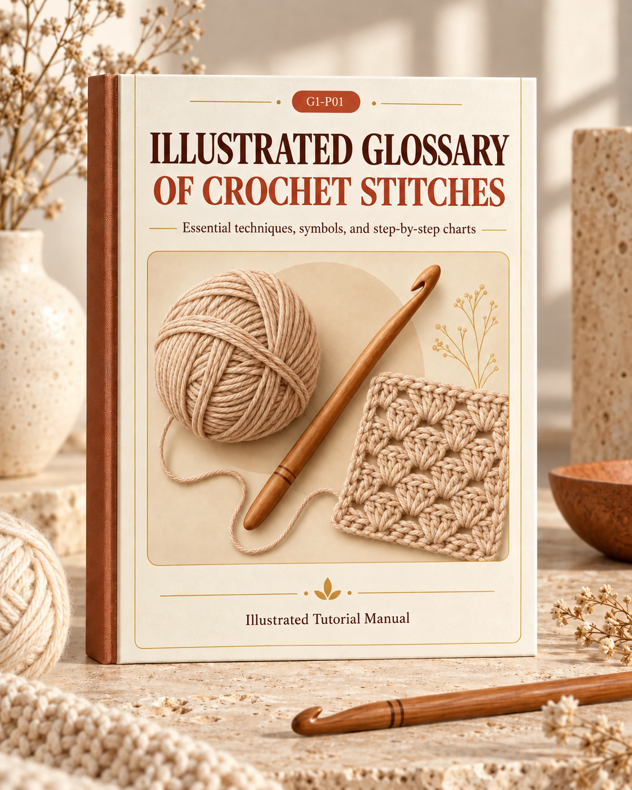

Four weekends, four finished projects, one beautifully decorated home
This program is designed for one simple goal: by the end of four weekends, you will have four real, finished crochet pieces displayed in your home — not in a drawer, not "almost done," but placed and looking beautiful.
Each weekend is one self-contained project. They are ordered by difficulty and size, so your skills build naturally:
| Weekend | Project | Skill Level | Time Needed | Where It Goes |
|---|---|---|---|---|
| 1 | Coaster set (6 pieces) | Beginner | 4–5 hours | Coffee table / kitchen counter |
| 2 | Placemats (2 pieces) | Beginner | 5–6 hours | Dining or kitchen table |
| 3 | Cushion cover (1 piece) | Intermediate | 5–6 hours | Living room sofa |
| 4 | Throw blanket (1 piece) | Intermediate | 6–8 hours | Sofa or bed |
Total time commitment: approximately 20–25 hours across four weekends (4–6 hours per weekend). You can split each weekend across Saturday and Sunday, or tackle it in one focused day.
After four weekends, you will own:
That is 10 handmade items in four weekends — enough to visibly transform your living space.
Buy everything at once so you are never waiting for supplies mid-weekend.
| Material | Quantity | For Which Weekend(s) | Approx. Cost |
|---|---|---|---|
| Worsted weight cotton yarn — Color A (main) | 5 skeins (100g each) | Weekends 1, 2 | $20–25 |
| Worsted weight cotton yarn — Color B (accent) | 1 skein (100g) | Weekends 1, 2 | $4–5 |
| Worsted weight acrylic/cotton blend — Color C (main) | 4 skeins (100g each) | Weekend 3 | $16–20 |
| Bulky weight acrylic or wool-blend — Color D (main) | 6 skeins (100g each) | Weekend 4 | $30–36 |
| Crochet hook — 5.0mm | 1 | Weekends 1, 2, 3 | $3–5 |
| Crochet hook — 6.5mm | 1 | Weekend 4 | $3–5 |
| Tapestry needle (blunt, large-eye) | 2 | All weekends | $2–3 |
| Stitch markers | 10 | All weekends | $3–4 |
| Measuring tape | 1 | All weekends | $1–2 |
| Scissors | 1 pair | All weekends | You have these |
| Cushion insert 45×45cm | 1 | Weekend 3 | $8–12 |
| Blocking mat + pins (optional) | 1 set | Weekends 1, 4 | $10–15 |
Total estimated cost: $100–132 for all four weekends. Choose one coordinating color family (e.g., sage green + cream, dusty blue + white, terracotta + natural) so all the pieces look cohesive in your home.
Difficulty: Beginner | Time: 4–5 hours | Makes: 6 round coasters (10cm diameter)
Practice swatch, complete 3–4 coasters
Finish set of 6, block and style
Coasters are the perfect first project. They are small (you finish one in 30–40 minutes), they use only basic stitches, and the satisfaction of completing a tangible item quickly builds momentum for the weekends ahead. If you make a mistake, you have only lost 20 minutes — not 20 hours.
Before diving in, make a quick practice swatch. Chain 15, work 5 rows of single crochet. Check your tension: if the fabric feels stiff and hard to push the hook through, loosen up. If it feels floppy with visible gaps between stitches, tighten up. Your gauge for these coasters should be approximately 4 sc = 2cm. Adjust hook size up or down if needed.
Finished size: approximately 10cm (4″) diameter.
Gauge: Rounds 1–2 = 4cm diameter with 5.0mm hook and worsted cotton.
Abbreviations: ch = chain, sl st = slip stitch, sc = single crochet, inc = 2 sc in same stitch.
Round 1: Make a magic ring. Ch 1 (does not count as a stitch), work 6 sc into the ring. Sl st to the first sc to join. Pull the ring tail tight. (6 sts)
Round 2: Ch 1, inc in every stitch around. Sl st to join. (12 sts)
Round 3: Ch 1, *sc 1, inc* — repeat around. Sl st to join. (18 sts)
Round 4: Ch 1, *sc 2, inc* — repeat around. Sl st to join. (24 sts)
Round 5: Ch 1, *sc 3, inc* — repeat around. Sl st to join. (30 sts)
Round 6: Ch 1, *sc 4, inc* — repeat around. Sl st to join. (36 sts)
Round 7 (border): Switch to Color B if desired. Ch 1, sc in every stitch around. Sl st to join. Fasten off. (36 sts)
Weave in all ends with your tapestry needle. Weave at least 3cm in one direction, then reverse and weave 3cm back for a secure finish.
Now that you have your first coaster done, the pattern is memorized. Your second coaster will take half the time. Aim to complete 3–4 coasters by end of Saturday. Take 5-minute breaks between coasters to stretch your hands.
Complete the remaining coasters to reach 6. Then block them all at once:
Difficulty: Beginner | Time: 5–6 hours | Makes: 2 rectangular placemats (33×48cm)
Start and complete the first placemat
Complete the second placemat, block both
You already know sc and working in rounds. This weekend you work in rows (back and forth) and learn the waffle stitch, which creates a beautiful textured grid that is both decorative and highly functional — the raised texture grips plates and prevents sliding.
Finished size: approximately 33×48cm (13×19″).
Gauge: 14 stitches × 8 rows = 10cm in waffle stitch with 5.0mm hook and worsted cotton.
Additional abbreviations: dc = double crochet, fpdc = front post double crochet, bpdc = back post double crochet.
Ch 68. (This gives you a width of approximately 48cm. Adjust in multiples of 3 + 2 if needed.)
Row 1 (setup): Dc in 4th ch from hook (the skipped 3 ch count as 1 dc), dc in each ch across. Turn. (66 dc)
Row 2: Ch 3 (counts as dc), *fpdc around next st, fpdc around next st, bpdc around next st* — repeat across, ending with dc in the top of the turning chain. Turn.
Row 3: Ch 3 (counts as dc), *bpdc around next st, bpdc around next st, fpdc around next st* — repeat across, ending with dc in the top of the turning chain. Turn.
Repeat Rows 2–3 until the placemat measures 33cm (approximately 26 rows total). End after a Row 3.
Do not turn. Work 1 round of sc evenly around the entire rectangle: sc in each stitch across the top, 3 sc in the corner, sc evenly down the side (approximately 2 sc per row-end), 3 sc in the corner, sc across the bottom (1 per foundation chain), 3 sc in the corner, sc up the other side, 3 sc in the last corner. Sl st to join. Fasten off.
Weave in all ends.
The waffle stitch has a rhythm: after 4–5 rows, you will stop looking at the pattern and start feeling the raised posts under your hook. The first placemat takes about 2.5–3 hours. Take a break halfway to stretch your wrists.
Your second placemat will go faster — the stitch is now muscle memory. After finishing, block both:
Difficulty: Intermediate | Time: 5–6 hours | Makes: 1 cushion cover (45×45cm, fits standard insert)
Crochet the front panel
Crochet the back panel, seam, insert cushion
This weekend introduces two new skills: working a larger flat panel with consistent tension, and seaming two panels together. The seed stitch (also called lemon peel or moss stitch) creates a dense, squishy fabric with a subtle texture that looks far more sophisticated than it is to make.
Finished size: each panel approximately 45×45cm. The cover should be 1–2cm smaller than the insert for a plump, professional look.
Gauge: 15 sts × 14 rows = 10cm in seed stitch with 5.0mm hook.
Stitch used: Seed stitch = alternating sc and dc in the same row, offset on the next row.
Foundation: Ch 68 (should measure approximately 45cm; adjust if your gauge differs — use an even number of chains).
Row 1: Sc in 2nd ch from hook, *dc in next ch, sc in next ch* — repeat across, ending with dc in the last ch. Turn. (67 sts)
Row 2: Ch 1, sc in first st (the dc), *dc in next st (the sc), sc in next st (the dc)* — repeat across. Turn. (67 sts)
Repeat Row 2 until the panel measures 45cm (approximately 63 rows). The key to seed stitch: always work sc into the top of a dc, and dc into the top of an sc. The stitches offset naturally.
Fasten off. Weave in ends.
Make an identical panel. Same foundation chain, same stitch, same measurements.
Alternative (removable cover): Instead of stitching the fourth side closed, sew 3–4 simple button loops along one edge and attach matching buttons to the other. This lets you remove the insert for washing.
Difficulty: Intermediate | Time: 6–8 hours | Makes: 1 lap throw (100×130cm)
Foundation + build rows (aim for 60–70cm)
Continue to full length, add border + fringe, block
This is the project that will make people say "you made that?" A throw blanket draped over a sofa changes the entire character of a room. We are using moss stitch (also called granite stitch or linen stitch), which creates a beautifully woven-looking fabric that is dense enough to be warm but light enough to drape well. Bulky yarn on a 6.5mm hook means the rows build fast.
Finished size: approximately 100×130cm (39×51″) before border.
Gauge: 12 sts × 14 rows = 10cm in moss stitch with 6.5mm hook and bulky yarn.
Stitch used: Moss stitch = ch-1, sc, skip 1 — creates a woven-look fabric.
Ch 122 (should measure approximately 100cm; adjust using an even number of chains + 2).
Row 1: Sc in 4th ch from hook (the skipped chains count as ch-1 + sk-1), *ch 1, skip 1 ch, sc in next ch* — repeat across. Turn. (60 sc + 60 ch-1 spaces)
Row 2: Ch 2, skip first sc, *sc in next ch-1 space, ch 1, skip next sc* — repeat across, ending with sc in the turning chain space. Turn.
Repeat Row 2 until the throw measures 130cm (approximately 182 rows). The rhythm is simple: sc into every ch-1 space, ch 1 over every sc. The pattern offsets itself automatically.
Fasten off. Do not weave in ends yet.
Round 1: Join yarn at any corner. Ch 1, sc evenly around the entire throw: sc in each stitch across the top, 3 sc in the corner, sc down the side (approximately 1 sc per row-end — test a few inches and count to keep it even), 3 sc in the corner, sc across the bottom, 3 sc in the corner, sc up the other side, 3 sc in the last corner. Sl st to join.
Round 2: Ch 1, sc in each st around, working 3 sc in each corner stitch. Sl st to join. Fasten off.
The double-round border gives the throw a clean, finished edge and keeps it from curling.
For a boho or farmhouse look, add fringe to the two short ends:
The moss stitch is meditative once you find your rhythm. With bulky yarn and a 6.5mm hook, each row takes about 2–3 minutes. Aim for 90–100 rows on Saturday (about 60–70cm). Place a stitch marker every 20 rows so you can track progress without counting. Take a 10-minute break every 45 minutes — your wrists will thank you.
Complete the remaining rows to 130cm. Add the border, then the fringe if you chose it. Then block:
Your skills are real now — here is where to take them
You have finished four projects, learned half a dozen stitches, and developed the muscle memory that makes crochet feel natural. The question now is not "can I do this?" but "what do I want to make next?"
Here is what you have learned across the four weekends and what each skill unlocks:
| Skill Learned | Weekend | What It Unlocks Next |
|---|---|---|
| Working in the round (magic ring, sc increases) | 1 | Baskets, bowls, round rugs, amigurumi |
| Working in rows (turning, consistent edges) | 2 | Scarves, table runners, rectangular blankets |
| Post stitches (fpdc, bpdc, waffle stitch) | 2 | Cables, ribbing, textured garments |
| Alternating stitch patterns (seed stitch) | 3 | Complex texture patterns, colorwork prep |
| Seaming and assembly | 3 | Garments, bags, multi-panel blankets |
| Large-scale projects (tension over many rows) | 4 | Full-size blankets, bedspreads, curtains |
| Borders and finishing | 4 | Polished, professional-looking edges on any project |
| Blocking | 1, 4 | Lace work, garments that need precise fit |
From the main Crochet for Your Home collection, these projects build directly on what you know:
Builds on: Weekend 1 (rounds), Weekend 4 (working with heavier yarn)
New skill: Working in a continuous spiral (no joining), stiffening with starch or interfacing.
Time: One weekend
Builds on: Weekend 2 (rows, post stitches)
New skill: Longer repeat patterns, optional tassels at both ends.
Time: One weekend
Builds on: Weekend 4 (everything)
New skill: Working with multiple colors, managing a heavy project over 2–3 weekends.
Time: 2–3 weekends
Builds on: Weekend 3 (seed stitch, seaming)
New skill: Making a cohesive set with slight variations (different textures, same colors).
Time: One weekend for 2 more covers
You have completed the 4-Weekend Program. You own four handmade pieces that did not exist a month ago, and every one of them is in your home, being used, being admired.
Pick your next project from the main collection, set a date, and keep building.
The patterns, the skills, and the confidence are yours now. Use them.